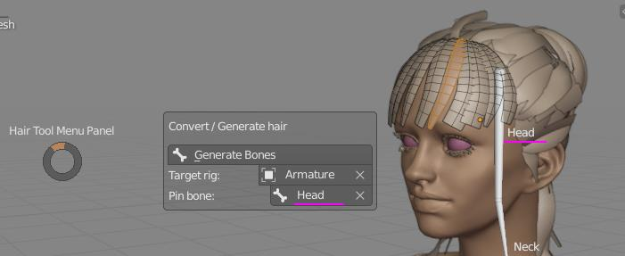
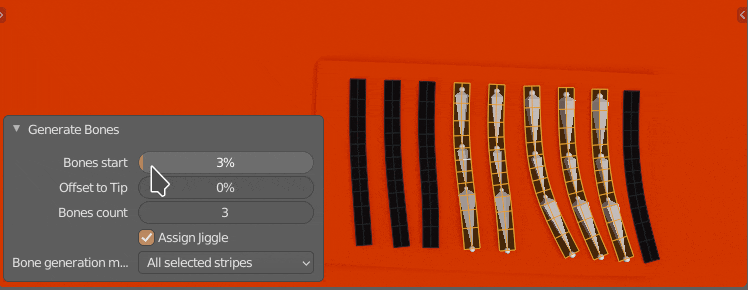
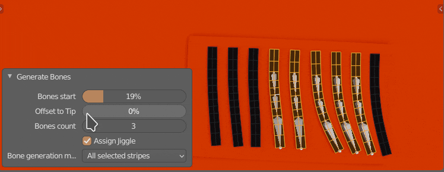
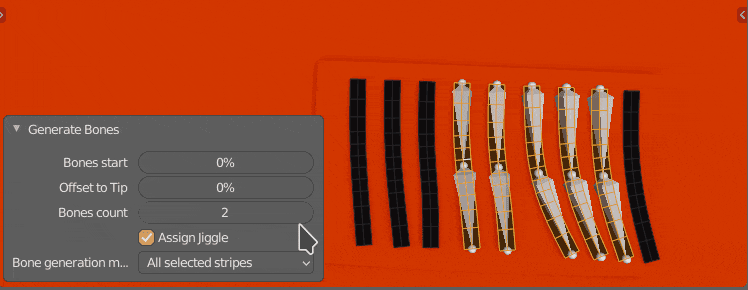
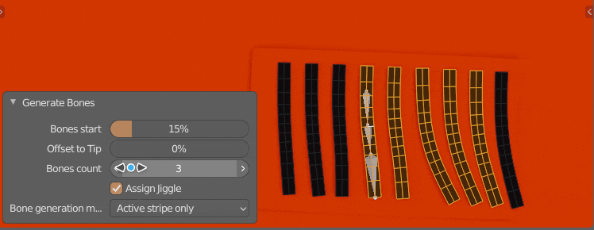
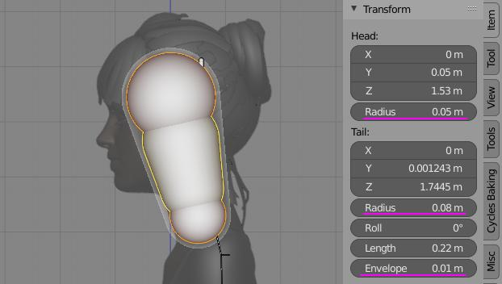

Hair Animation¶
Hair Tool give you easy option, to generate bones and weight paint data for your hair cards. You can animate generated bones using simple jiggle physics.
Note: This only works on mesh hair (there is no way to rig curves in blender).
Bones Setup¶
To create bones for selected mesh strands (islands):
- convert curve hair to mesh using Curves to Mesh
- In mesh edit mode select hair strands (mesh islands) that you want to animate.
- Open Hair Tool Pie menu using Ctrl+Shift+H -> select 'Generate Bones'
- now you can tweak option for bone generation (bones count, starting position, etc)
If you already have armature object assigned to your character it is recommended that you point Hair Tool to it by setting 'Target Rig' property. With that, generated bones will be automatically assigned to your character rig.
Also remember to setup 'Pin bone' - this bone will be automatically set as parent for generated hair bone chains.
 Usually character 'head' bone can be used as 'pin bone' (hair bones parent)
Bones Setup - parameters¶
 Bones Start - Place first bone at some start distance from strand root location
 Offset To Tip - Bunch up generated bones more toward strand tip
- Assign jiggle - Assign jiggle physics to generated bones
 Bones Count - Bones Count
 Bones Generation Mode - Generate separate bone chain for each selected mesh strand, or generate only one chain for mesh island with active face/edge/face (other selected islands will use active chain for skining - good for clumps)
Jiggle Physics Setup¶
If you enabled 'Assign Jiggle' when creating bones, then HT will automatically add jiggle physics to new bones. You can edit jiggle physics in armature POSE MODE:
- change time step
- add collision to selected bones (other bones will bounce from collision bone)
- create jiggle physics presets (with various mass, stiffness, damping, gravity parameters) and assign these presets to selected bones
Simulation Mode¶
Jiggle Physics can be run in two Modes:
- Interactive - good for mouse interaction with jiggle bones, but it won't work when rendering animation
- Animated - only works when animation playback is enabled. Useful when rendering animation.
There is also option to bake jiggle sim into animation using those steps
Physics presets¶
You can create multiple physics presets in Hair Tool using [+] icon.
To assign physics preset to bones:
- select target bones
- open triangle menu and select 'Assign jiggle to bones'
- you can remove selected bones from preset using same menu
Note: If you have any bones selected when creating new physics preset, then those bones will be automatically assigned to new physics preset.
Baking Jiggle Animation¶
Jiggle physics can be baked to animation using following steps:
- select jiggle bones
- object mode > animation > bake action, with these settings:
- only selected bones
- visual keying
- overwrite current action
- bake bones (not object)
Don't forget to turn simulation off after baking BEFORE rendering, or you will get unexpected results.
Collisions¶
Only bone to bone collisions are supported. You can add collision to selected bone using 'Add Collision' button. Other jiggle bones will bounce from it.
Note - Bone to mesh collisions are not supported.
To define collision shape use bone envelope properties:
- head radius ( [Alt+S] - default blender hotkey to edit radius size)
- tail radius ( [Alt+S] - default blender hotkey to edit radius size)
- envelope (works as additional collision margin - pushes colliding bones more outwards)
